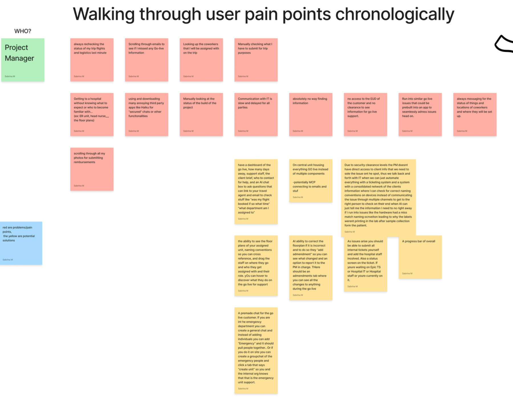
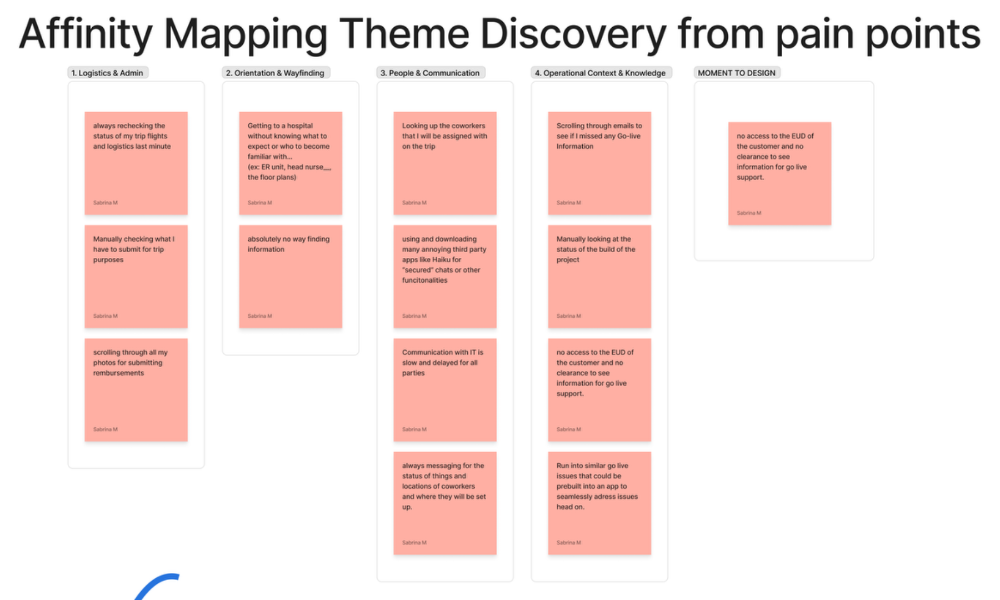

Logistics & admin
- Travel and flights
- Trip submissions
- Reimbursement
An operational companion that carries a project manager's context through a hospital software go live, from onsite orientation to a verified correction.
I spent a stretch of my career as an implementation project manager supporting hospital software go lives for a healthcare software vendor. A go live is a few days of very high context work: you are onsite in a building you may not know, supporting clinical staff on software that was configured months earlier by people you may never have met.
To do the job well I needed to know where I was assigned, which floor and unit to walk to, who my coworkers were and where they had set up, who the hospital contacts were, what had actually been built, which devices were in the room, who owned an open issue, and whether a fix had been verified.
None of that information was missing. It was just scattered across email, travel systems, staffing lists, project systems, hospital floor plans, client device records, secure messaging, ticketing, and other people's memory.
Eleven places I might have to visit to finish one task that was already in front of me.

I started by writing down every frustration I could remember, in the order it happens on a trip rather than sorted by severity. Rechecking flights at the last minute. Scrolling email to be sure I had not missed go live information. Looking up which coworkers were assigned with me. Arriving at a hospital with no sense of the unit, the floor plan, or the head nurse. Digging through my camera roll for reimbursement photos. Checking build status by hand. Waiting on IT. Messaging around to find out where someone was and who owned an issue.
Kept in that raw form, the list reads like a complaint. Grouped, it turned into a diagnosis.

These were analytical categories, not the product's navigation. I want to be clear about that, because the obvious move would have been to ship four tabs named after them.
The context needed to finish the current task does not travel with the work.
It would be easy to call this "too many apps," but consolidating tools would not fix it. The problem is not the number of systems. It is that the context sits in the systems rather than travelling with the piece of work, so the PM becomes the integration layer.
That gave me the thesis: build one operational companion that carries the relevant context through the go live workflow, and surface it at the moment it becomes useful. Not a dashboard that shows everything at once.
Primary user: an implementation project manager supporting a hospital software go live onsite.
Scope: final preparation before arrival through active onsite support. I deliberately did not redesign the whole implementation lifecycle. This window is where fragmented information turns into immediate operational friction, because the PM is standing in a room with a clinician waiting.
Then I stopped asking what pages the app needed and started asking what context has to follow the PM through each stage.
The three highlighted stages are where the product earns its place, so they became the hero interaction.
Ideation included all of it: travel, client briefing, AI questions about assignment, floor plans, staff positions, naming conventions, build status, tickets, amendments, unit chats, overall progress, similar issue retrieval, protected record validation. Reimbursement and travel are real frustrations, but they are administrative problems that already have owners elsewhere. Cutting them was a product decision, not an oversight.
GO LIVE PROJECT
│
├── TODAY / BRIEF assignment · shift · current unit · team · priorities · active issues
│
├── MAP hospital · floor · unit · room · permitted device objects
│
├── PEOPLE implementation staff · hospital staff · roles · assignments · availability
│
├── ISSUES originating location · related device · workflow · owner
│ status · next action · related communication
│
├── AMENDMENTS object changed · previous value · observed value
│ author · reviewer · status · audit history
│
├── CHATS linked to issue / device / unit / amendment
│
├── PROJECT CONTEXT build status · client brief · contacts · known issues
│
└── AI CONTEXT LAYER retrieve permitted information · identify similar issues
prefill known context · recommend likely ownership
cross cutting PERMISSIONS PROVENANCE OWNERSHIP AUDIT HISTORY CONTEXT INHERITANCE
The important part of this architecture is not the list of sections. It is that map, issue, amendment, person, and chat are not separate silos. They reference the same underlying objects.
So one workstation can exist on the map, become the subject of a discrepancy, be referenced by an amendment, be assigned to Hospital IT, and appear inside the contextual chat, without the PM retyping any of it.
The point of the low fi pass was to prove behaviour before visual polish: what content carries forward, what changes state, and where a human has to intervene. It covered the product shell, whole building wayfinding, the hero discrepancy flow in twelve steps, and a secondary AI naming check.


Here is the scenario the product is built around, using synthetic data. At Miami General Hospital, outpatient emergency clinic, the PM is assigned to Triage / Fast Track on the ground floor.
The system says workstation WS-ER-14 lives in ER-108, Exam Room 3. Standing in the unit, the PM can see it installed in ER-110, Triage Bay 2. Somebody moved it and nobody updated the record.
The PM taps the device on the unit map and reports a location discrepancy. Because the report starts from the map, the hospital, unit, room, and device are already attached.
These locations differ. I can create an amendment for Hospital IT to verify.
It does not say the database is wrong, and it does not move the device. The PM chooses to create the amendment.
After the PM confirms, the operational map can show WS-ER-14 in ER-110, but it is clearly marked amended, awaiting verification. The original value stays in the history. The PM has not overwritten the hospital's canonical record, and nobody downstream has to guess whether the change was authoritative.
The product models the uncertainty instead of hiding it. Amber means somebody still has to look.
The PM asks: is LABPRNTR402 the correct printer name for ER-110? Naming conventions matter during a go live because a mislabelled device routes print jobs to the wrong floor.
AI checks the protected end user device context, finds the expected convention and the registered name, and offers to create a prefilled discrepancy report. The PM reviews it and sends it to Hospital IT. Status becomes waiting on Hospital IT, and a secure chat opens with the context already attached.
No amount of retrieval tells the system that somebody wheeled a workstation from Exam Room 3 into Triage Bay 2. There is no sensor and no event. The only source of truth is a person standing in the room.
So the map is not a read-only diagram. Every device on it is a reporting surface, and reporting starts from the object rather than from a blank form.
During real go lives I often needed device context I had no clearance to browse. The usual outcome is a dead end and a message to somebody with access.
The AI context layer answers a narrow question against permitted records without granting general access. The PM learns that the registered name is P-ER-04 without being handed the client's device inventory. A permission boundary shapes the response instead of stopping the work.
The tempting version writes ER-110 straight into the record. That is faster and it destroys the audit trail, and in a hospital the audit trail is the point.
So the amendment becomes pending. Original and proposed values both persist, the reviewer is named, and the map carries an awaiting verification marker until Hospital IT confirms. The correction is useful immediately and authoritative only after review.
AI reduces search and re-entry. Judgment on anything consequential stays with the person who is accountable for it.
The sequence mattered. The FigJam produced the problem, the affinity map produced the diagnosis, and the storyboard settled the behaviour. Only then did I use Claude to build it, which meant I was implementing decisions rather than discovering them in code.
The result is a clickable build of Miami General Hospital: assignment brief, whole building wayfinding, unit map, device objects, the discrepancy flow, the amendment log, and the contextual chat.

The part I am least sure about is the amendment. It is the right systems answer, but it asks a PM in a busy unit to accept that the fix is not finished. If that friction turns out to be unacceptable, the honest response is to redesign the verification handoff rather than quietly let the app overwrite the record.
All hospital, device, and staff data here is synthetic. Nothing in this project uses real client information.